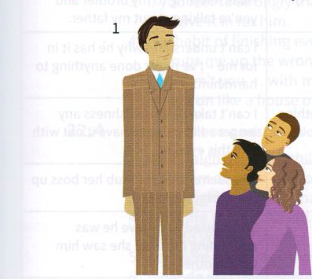
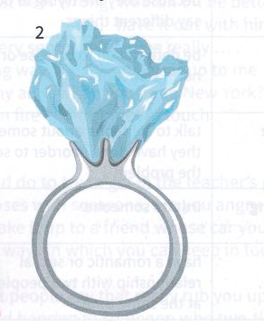
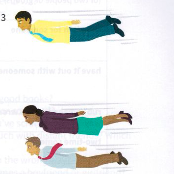

Exercises
21.1 Correct the mistakes in these idioms.
- He is always the odd out one. If all his friends do one sport, he does a different one.
- When he lost all his money, he still tried to keep appearances even though he could not afford his lifestyle.
- Sometimes it's better to give a low profile at work. In that way, nobody asks you to do difficult jobs.
- She became a name for herself by being the first woman to climb Mount Everest.
- He's always putting on air and grace, but everyone knows he's just an ordinary person with a very ordinary background.
21.2 Rewrite the underlined part of each sentence with an idiom.
- All the most important people will be at the concert on Friday, so don't miss it.
- It's not socially acceptable to refer to 'underdeveloped' countries any more. If you don't want to offend people, you should say 'developing nations'.
- He was voted 'Best actor who is quickly becoming well-known' of 2016.
- They employed a lot of young people as they felt they needed new people with fresh ideas.
- A lot of the people who live in those huge houses near the beach think they're a better social class than other people and look down on them.
- My boss gives the impression of being rather rude and uneducated, but he's a very nice guy in fact.
- She was a very respectable member of society, but then it turned out she was involved in the illegal drug trade.
21.3 In your own words, say what it means if ...
- ... you're on your way up in your profession.
- ... someone is down and out.
- ... someone is a high-flyer in the computer industry.
- ... someone is toffee-nosed.
21.4 Which idioms do these pictures make you think of?



Over to you
Look in your vocabulary notebook or in other units in this book where there are no pictures and see how many idioms you could draw a picture of. Draw simple pictures that might help you to remember three idioms.